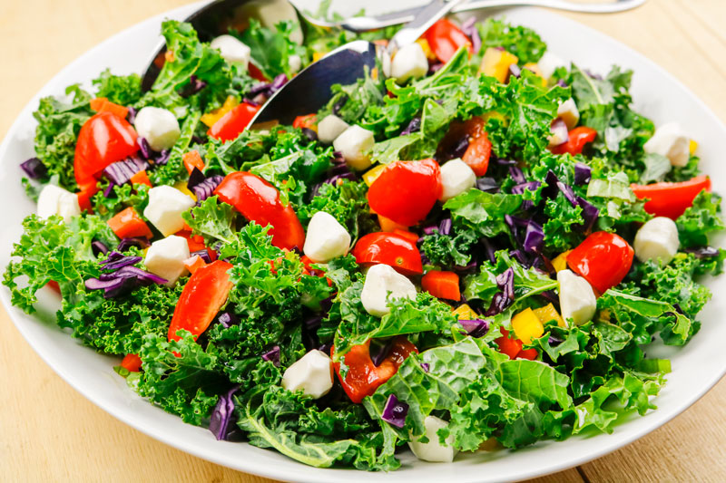

Corey's Salad

Follow this recipe to create the most incredible salad which is high
in protein and rich carbs and low in calories and fat. It includes
a wide variety of vegetables, chicken, and a few secret ingredients
that really make this salad special.
This recipe is best followed with fresh ingredients.
Ingredients
- 65g Black Beans
- 75g Sweet Corn
- 113g (one serving) Cottage Cheese
- 70g Bell Peppers
- 70g Cucumber
- 50g Cherry Tomatoes
- 50g Carrots
- 50g Kale
- 50g Green Leaf Lettuce
- 50g Spinach
- 84g (One serving) Tyson Cubed Chicken Breast
- 20ml Skinny Girl Dressing (of choice)
Instructions
- Add Beans, Corn, and Cottage Cheese to large salad container.
- Chop Peppers, Cucumber, Tomatoes, Carrots and add to container.
- Chop Kale, Lettuce, and Spinach and add to container.
- Microwave Chicken, chop, and add to container.
- Add dressing of choice to container.
- Mix thoroughly and enjoy!
Home